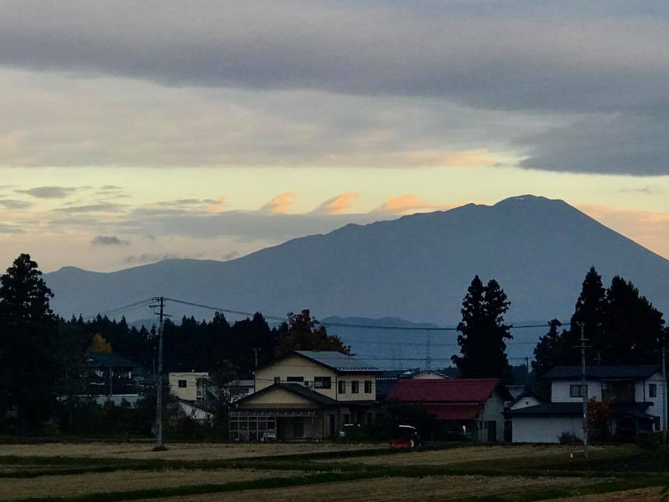
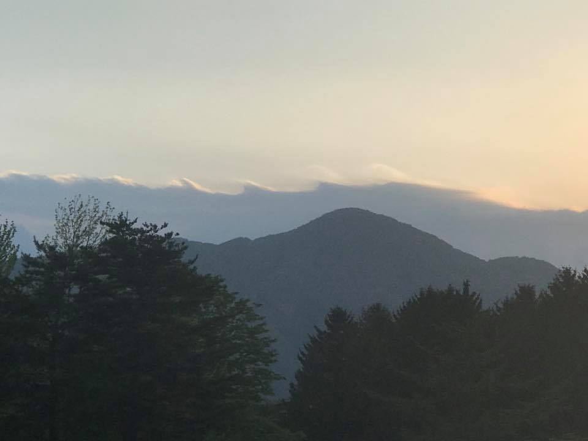
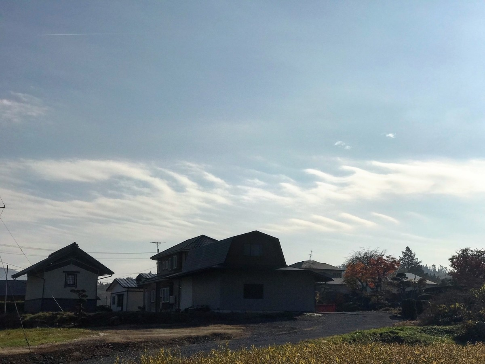
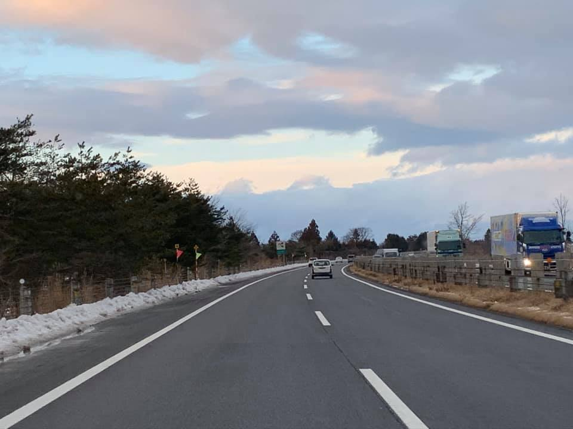
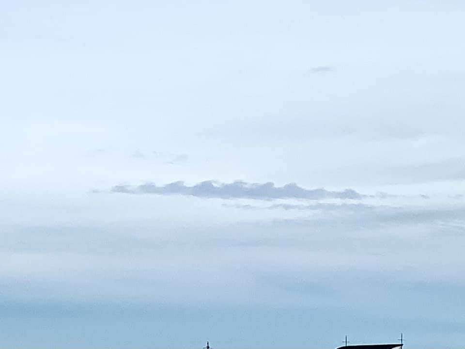
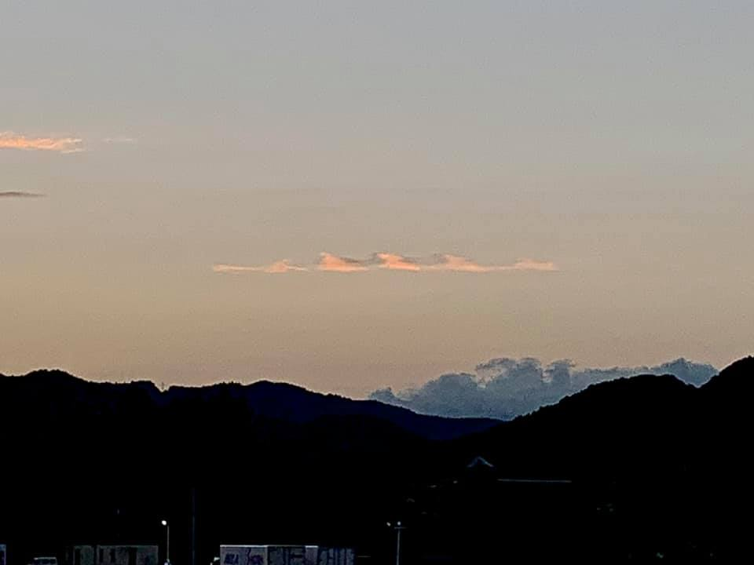
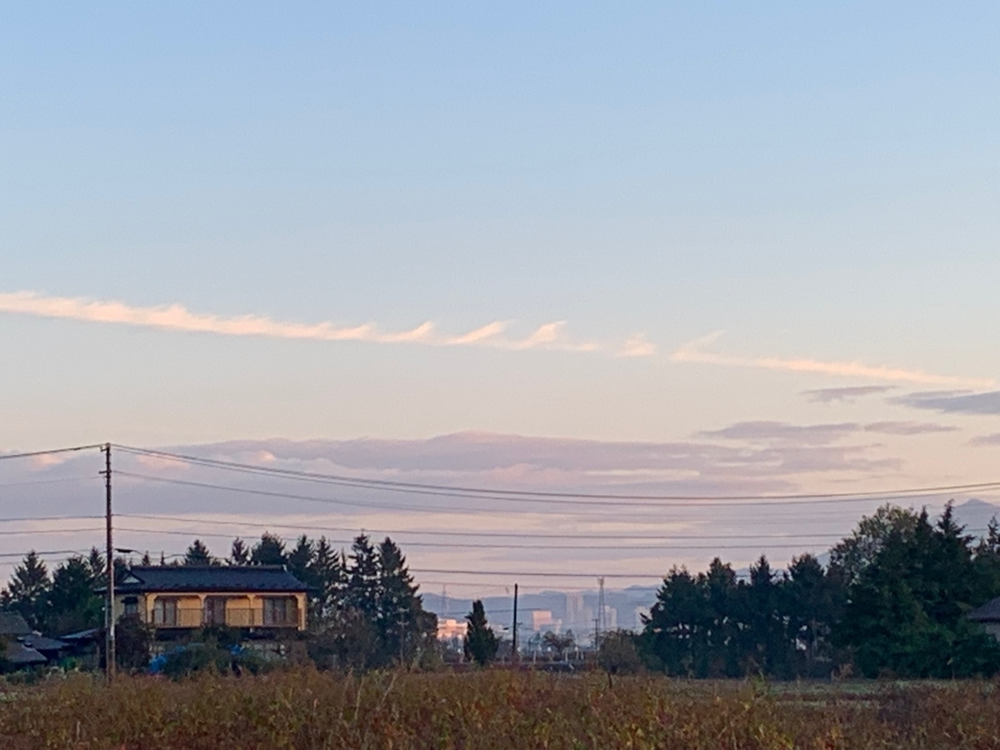
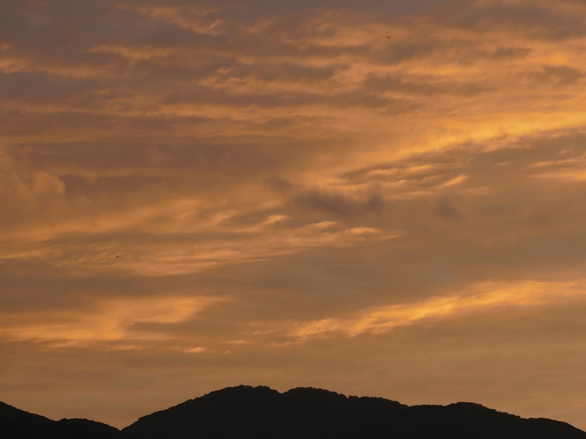
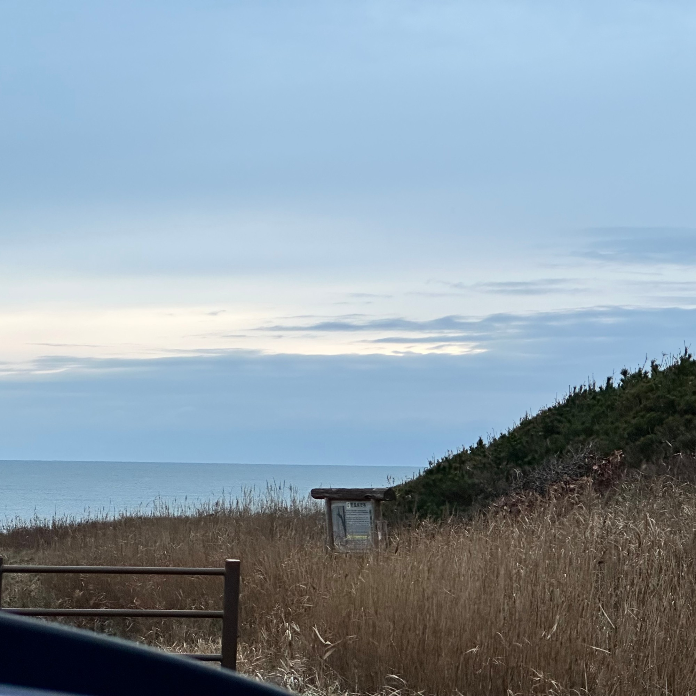

朝夕の空を見上げると、雲のてっぺんに、海の波が砕けるときのような形が並んでいることがあります。フラクタスと呼ばれる雲の姿です。つどいの森の管理人が岩手の空で撮りためた写真といっしょに、この形を生むしくみ、ケルビン・ヘルムホルツ不安定性を読み解きます。

フラクタスは、雲の上で砕ける波
世界気象機関（WMO）がまとめる「国際雲図帳」は、雲を見分けるときの国際的な手引きです。その2017年の改訂で新しく載ったのが、fluctus（フラクタス）でした。ラテン語で「波」を意味し、日本語では波頭雲と呼ばれます。
雲図帳の説明を短くまとめると、「雲の上面にできる、巻き毛や砕ける波の形をした、比較的短命な波」です。雲の種類の名前ではなく、雲に現れる特徴（副変種）を指します。巻雲、高積雲、層積雲、層雲によく現れ、積雲にもときどき現れます。
似た言葉に「波状雲」があります。こちらは、雲の層に波模様や波紋が広がる雲を指す別の分類（変種）です。頭が巻いて砕けている波を見つけたら、それがフラクタスです。雲研究者の荒木健太郎さんは2018年、この雲の写真を紹介しながら「名前で呼んであげましょう」と呼びかけました。
しくみは、海に立つ波と同じ
フラクタスをつくるのがケルビン・ヘルムホルツ不安定性です。名前は19世紀の物理学者2人に由来します。ヘルムホルツが1868年にこの現象に気づき、ケルビン卿（温度の単位「ケルビン」のケルビンです）が1871年に数式で解きました。
正確に言おうとすると「密度や速度の異なる流体の界面に生じる不安定」となって、何だかよくわかりません。そこで、海で考えてみます。
海面に風が吹くと、波が立ちます。上は軽くて速く動く空気、下は重くてゆっくりした水。その境目が波立つのです。ケルビン卿が解こうとしたのも、この風の波でした。
同じような境目は、空の中にもあります。空気は高さによって温度も風の強さもちがい、層になっています。下に冷たく重い空気、上に暖かく軽い空気。この境目で上の風が速くなると、海面と同じように波が立ちます。
空気の波そのものは目に見えません。ところが、境目のすぐ下に雲の層があると、雲の上面が波をなぞって形にしてくれます。雲は、見えない空気の波を見せてくれる絵の具なのです。
波が砕けるまでの4コマ
上の風は速く、下の風は遅い。雲の上面はまだ、ほぼまっすぐです。
波の山の上は風の通り道が狭まって、風が速くなります。すると上から押さえる力が弱まり、山はさらに持ち上がります。
波の頭が速い風に押されて、風下へ倒れ込みます。海岸で砕ける波にそっくりの、フラクタスの形です。
倒れた頭は渦に巻き上がり、上下の空気を混ぜていきます。混ざるほど風の差も重さの差も小さくなり、波は崩れます。フラクタスが短命なのは、このためです。
図は、上下の速さの差だけを考えた渦シートの計算（Krasny, 1986 の方法）で描いた境目の形です。白いところが雲の層で、重さの差や雲粒の動きは省いています。波の間隔がそろうのは、とくに育ちやすい波の長さがあるためです。

重さがおさえ、風の差が立てる
どんな境目でも波が育つわけではありません。下が重く上が軽い空気は、持ち上げられても、重さで元に戻ろうとします。風の差が波を立て、重さがそれをおさえる。この綱引きで風の差が勝ったときだけ、波は育ちます。
気象学では、この綱引きをリチャードソン数という数字で表します。「重さがおさえる力」を「風の差があおる力」で割ったような値で、およそ0.25より小さいと、波が育ちやすい状態です。
同じしくみは、ほかの場所にも
速さのちがう流れが接していれば、空気でなくても、同じことが起こります。
- 川の合流点｜流れの速さがちがう2本の川が合わさる境目。
- 海の中｜塩分のちがう水の層のあいだ。海面から見えない深い海の中でも観測されています。
- 森の上｜森の上を吹く速い風と、枝葉にさえぎられた森の中の遅い風の境目にも、似た不安定があると考えられています。風にうねる田畑の「穂波」との関係は、いまも研究が続いています。
- 太陽や惑星｜太陽の大気や土星の雲にも、同じ波の形が見つかっています。
岩手の空で撮りためた波
つどいの森の管理人は、2018年からこの形を追いかけ、地元岩手で写真を撮りためてきました。はっきり巻いたものから、波の頭がのぞく程度のものまで、さまざまな表情があります。






空の波の見つけ方
- 雲の上の縁を見る｜波が立つのは雲の上面です。横に長くのびた雲の、いちばん上の線を目でたどってみてください。
- 朝夕をねらう｜ここで紹介した8枚は、どれも朝か夕方の写真です。低い光が雲の縁を染めると、形が浮き上がります。
- 遠くの雲を見る｜巻いた形が分かるのは、波の列を横から見たときです。真下に近い雲は、ただの筋に見えることがあります。
- 見つけたらすぐ撮る｜フラクタスは短命です。あとで、と思っているうちに崩れてしまいます。
森遊びの、その先へ
2023年11月27日、青森県の津軽七里長浜。出来島埋没林の案内板の向こうで、海の上にのびる雲の帯の縁が、ゆるやかに波打っていました。岩手の写真ほどはっきり巻いてはいません。それでも、海の上の空にも、速さのちがう空気の境目があったのかもしれないと思うと、見慣れた空が少し違って見えてきます。

木の名前を覚え、葉っぱの形を確かめ、川原の石を拾う。森遊びで育つのは、目の前のものを「なぜこの形なんだろう」と見る目です。その目は、空に向けても使えます。森で遊んだ帰り道、少し顔を上げてみてください。雲のてっぺんにも、知らなかった世界への入口があります。
出典・もっと見る
- ケルビン・ヘルムホルツ不安定性の波状雲（フラクタス）（つどいの森ブログ、2022年）
- Fluctus | International Cloud Atlas（世界気象機関）
- A New Edition of the International Cloud Atlas（世界気象機関、2017年の改訂）
- 荒木健太郎さんの投稿（2018年1月24日）
- ケルビン・ヘルムホルツ不安定性（Wikipedia）
- Kelvin–Helmholtz instability（Wikipedia 英語版）
- 波状雲（Wikipedia）
- Modelling waving crops using large-eddy simulation（穂波の研究例）